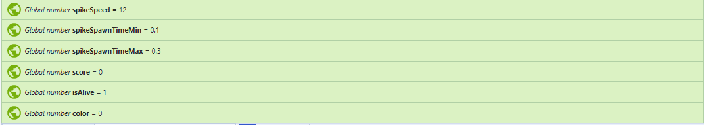
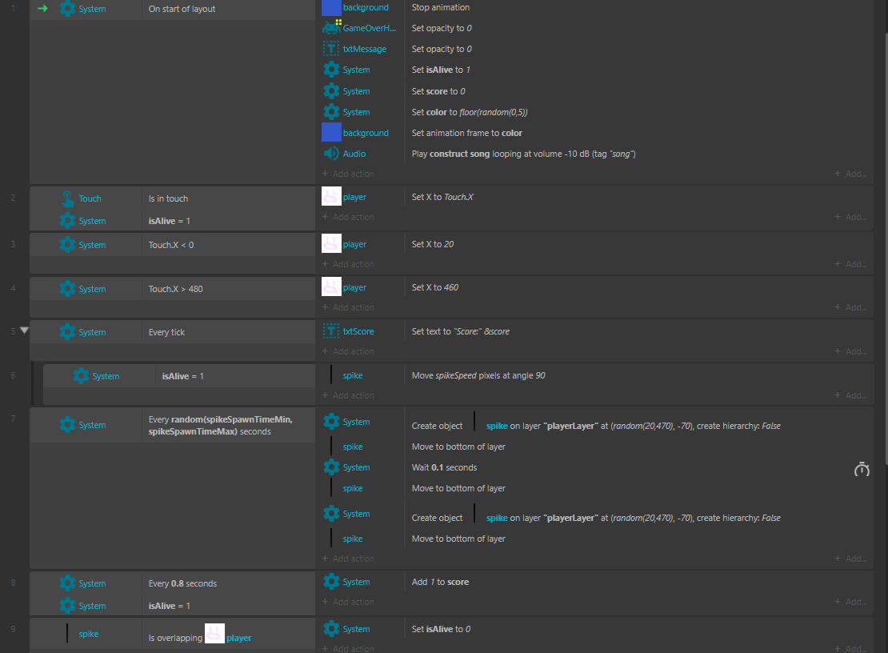
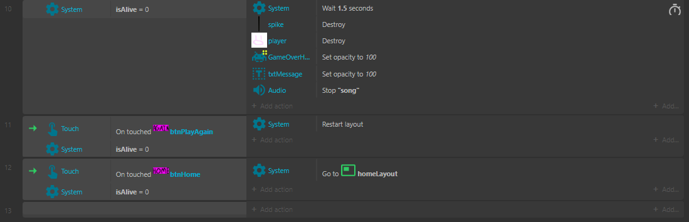

A fair warning, there is a lot to see
These are the global variables, and they are very important for this game. The first 3 variables are all related to the spikes, the first one is about how fast the spike itself travels, while the second and third ones are focused on the spawn rates of a spike. The 4th variable is just the score, this will tick by 1 every second and that really is the only incentive in this game. The 5th global variable is the alive variable, it's pretty simple, when the player is alive it's set to 1 and when the player dies it goes to 0. This would give the signal for the game over screen to come up. The final variable is the color variable, this one doesn't have too much of a purpose, all it really does is decide which color the background will be.
This is the first half of the actual event sheet. As you can see there is a command that runs eveyrtime the game starts "On start of layout". The first one is that it would stop the background on one fixed color, then it would make it so that the Gamer Over screen is invisible. The Game over screen is always there but while the game is running the screen is not there. Then it would set it so that the player was alive and will reset the score. Music also plays when the game starts!. After that comes some basic stuff, setting it so that the player moves via the mousepad and making sure that the player is not able to go throught the side walls. Then comes the add 1 to the score for every tick and making it so that the spike falls on a direct angle rather than sideways. The 7th step may look like a lot, but its just how frequently the spikes spawn, and to set the command for the spike to spawn eveyr .01 seconds. The 8th command is just a score command and the 9th command is making it so that when the player is touched by the spike it sets the global variable of isAlive to zero, meaning the player died.
This is the final part of the event sheet, and can be descirbed as the game over section. Once getting hit the 10th event starts, first there is a 1.5 second wait so you can think about what you've done. Then all the spikes and the player will be destroyed and the game over screen will pop up. Once the game over screen comes up there will be 2 buttons, one will take you to the home screen and the other one will start the game again. Both buttons are labeled accordingly. That's it! Now that you're done reading through this website you can go on and player the game now!
| Page | Link |
|---|---|
| Index | Click me |
| Directions | Click me |
| Home Page | Click me |
| Main Layout | Click me |